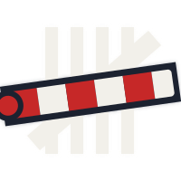
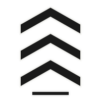

Runners wiki
Pirate factions
The world of Runners, as planned. The game is in development and details will change.
Six large pirate factions work the seas of 2055. Three hold toll lines on the narrow ways between the oceans; three roam the open ocean, outside every nation's water, where there are no oil rigs. Each has its own colours, a mark sprayed on every ship, and ten names on the wanted board.

The TollmenA large pirate faction. They hold the Cut, in the Narrow Seas. The DriftmarkA large pirate faction. They hold the Suez Cut, in the Choked Sea.
The DriftmarkA large pirate faction. They hold the Suez Cut, in the Choked Sea. SaltrotA large pirate faction. They hold the Ash Coast, in the Ash Sea.
SaltrotA large pirate faction. They hold the Ash Coast, in the Ash Sea. The LonglinersA large pirate faction. They roam the Empty Quarter, the open central Pacific, outside every nation's water, and hold no rigs.
The LonglinersA large pirate faction. They roam the Empty Quarter, the open central Pacific, outside every nation's water, and hold no rigs.
The FlotillaA large pirate faction. They roam the Long Fetch, the open South Atlantic, outside every nation's water, and hold no rigs. DeadweightA large pirate faction. They roam the open Indian Ocean, north of Dex's Wake, outside every nation's water, and hold no rigs.
DeadweightA large pirate faction. They roam the open Indian Ocean, north of Dex's Wake, outside every nation's water, and hold no rigs.